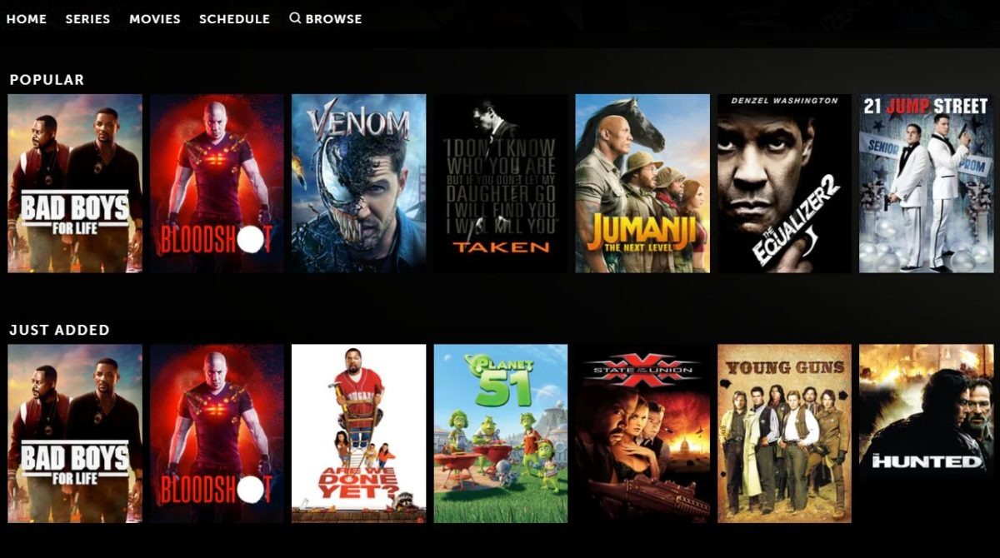

Hello World!!!, I'm
Deepika Balasubramanian
Decoding Data to Drive Decisions


Hello World!!!, I'm
Decoding Data to Drive Decisions
Get To Know More

Data Analytics & Engineering: 2+ years
Software Developement: 2+ years

M.S Information Systems
B.E Computer Science
Welcome to my Data Analyst portfolio, where data transforms into insights. Dive into my analytical endeavors, where I've unravelled patterns, crafted compelling visualizations, and driven data-driven decisions. Explore my proficiency in statistical analysis, programming, and data visualization, reflecting my dedication to turning raw data into actionable intelligenc
Software Engineer ( Automation, Data Pipeline, Full Stack Developement, Dashboarding)
Data Analyst ( Data Analytics, Python Developer, statistical Inference)
Browse My Recent

EmoSense: Empathetic Emotion AnalysisUtilized transfer learning techniques to construct a real-time emotion detection tool designed to enhance comprehension of individuals' emotions in various scenarios, including therapy, interviews, and other applications. |

Content Based Image RetrievalDesigned a basic image similarity search system in C++ with filter and histogram matching techniques to gain insights into filter operations within larger models, despite not achieving state-of-the-art performance. |

MNIST and Greek Symbol RecognitionCreated a straightforward image similarity search system utilizing C++ with filter and histogram matching techniques. Although not state-of-the-art in terms of performance, this project offers valuable insights into the operation of filters within complex models while maintaining computational efficiency. |

Simplified Custom Object DetectionConstructed a collection of ten distinct object categories, each consisting of 10 curated images. Employed fundamental image processing filters to facilitate object detection within this tailored dataset. |

Real Time FilteringCreated different filters to add effects in live video, created filters like cartooning, flash effect, black & white, ghost etc. |

Augmented RealityTo calibrate a camera and then use the calibration to generate virtual objects in a scene. The end result should be a program that can detect a target and then place a virtual object in the scene relative to the target that moves and orients itself correctly given motion of the camera or target. |

Text-to-Image:Stable DiffusionEmploying Hugging Face's pretrained stable diffusion models for image generation while dissecting the process of how the desired image is crafted across various timestamps. |

Denoising Autoencoders MNISTExploring the workings of Hugging Face's pretrained Denoising Autoencoder models, with a focus on understanding the denoising process and examining the model's output at various training epochs. |

Generating Synthetic Images : Denoising AutoencodersExploring the workings of Hugging Face's pretrained Denoising Autoencoder models, for generating synthetic data from given dataset. This uses MNIST data to learn and generate new images. |
|

Movie Recommendation SystemDeveloped a movie recommendation system using cosine similarity and TF-IDF techniques to provide personalized film suggestions based on user preferences and content similarity. |
||
Get in Touch